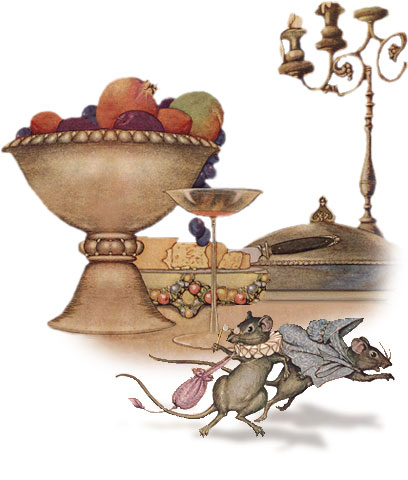

The Town Mouse & the Country Mouse

A Town Mouse once visited a relative who lived in the country.
For lunch the Country Mouse served wheat stalks, roots, and acorns,
with a dash of cold water for drink. The Town Mouse ate very sparingly,
nibbling a little of this and a little of that, and by her manner
making it very plain that she ate the simple food only to be polite.
After the meal the friends had a long talk,
or rather the Town Mouse talked about her life in the city while
the Country Mouse listened.
They then went to bed in a cozy nest in the hedgerow
and slept in quiet and comfort until morning.
In her sleep the Country Mouse dreamed she was a Town Mouse with all
the luxuries and delights of city life that her friend had described for her.
So the next day when the Town Mouse asked the Country Mouse to
go home with her to the city, she gladly said yes.
When they reached the mansion in which the Town Mouse lived,
they found on the table in the dining room the leavings of a very fine banquet.
There were sweetmeats and jellies, pastries, delicious cheeses, indeed,
the most tempting foods that a Mouse can imagine. But just as the Country Mouse
was about to nibble a dainty bit of pastry, she heard a Cat mew loudly and scratch at the door.
In great fear the Mice scurried to a hiding place, where they lay quite still for a long time,
hardly daring to breathe. When at last they ventured back to the feast,
the door opened suddenly and in came the servants
to clear the table, followed by the House Dog.
The Country Mouse stopped in the Town Mouse's den only
long enough to pick up her carpet bag and umbrella.
"You may have luxuries and dainties that I have not,
" she said as she hurried away, "but I prefer my plain food
and simple life in the country with the peace and security that go with it."
Poverty with security is better than plenty in the midst of fear and uncertainty.